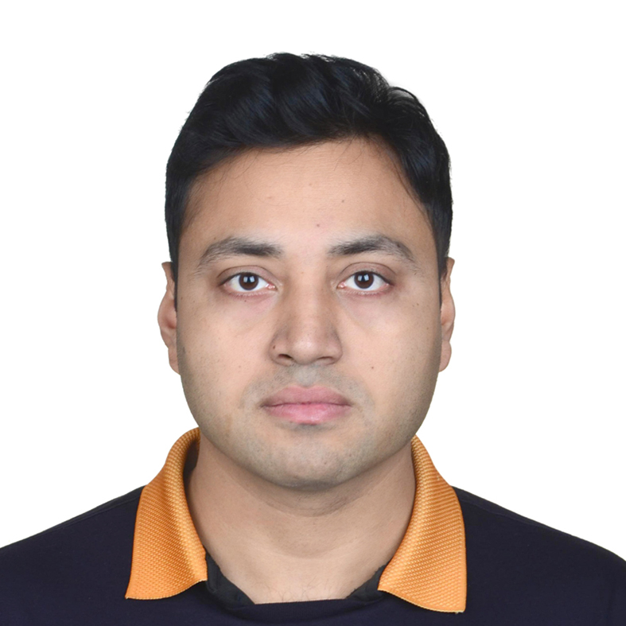

Assistant Professor
School of Physical Sciences
National Institute of Science Education and Research
Our research lies broadly in the domain of nonequilibrium phenomena, with a keen interest in collective behavior, optimal control, and dynamical phase transitions. We are deeply motivated to understand the topological characteristics of a wide variety of fluids (e.g., liquid mixtures, pulsating tissues), and a long-term goal is to characterize universal aspects of different active and passive fluids through the lens of topological defects. The following video shows coarsening of topological defects in a pulsating liquid.
We develop and employ theoretical and computational approaches as required, and study how complex many-body systems organize, fluctuate, and respond when driven away from equilibrium.
For PhD and postdoc opportunities, contact me directly at tirthankar@niser.ac.in .